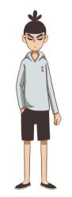
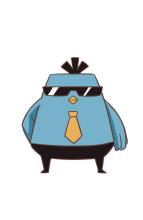
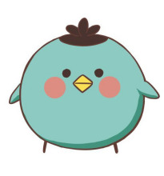
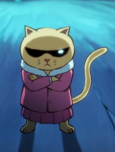
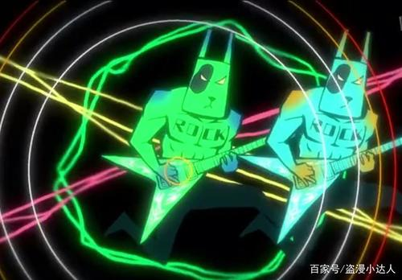
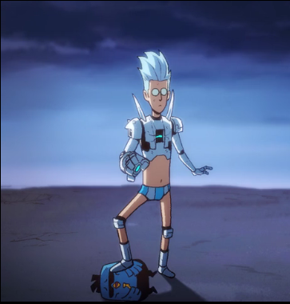
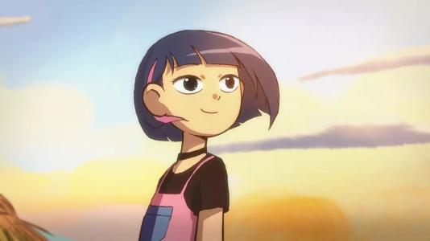
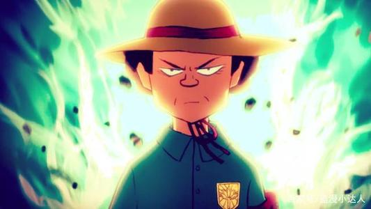
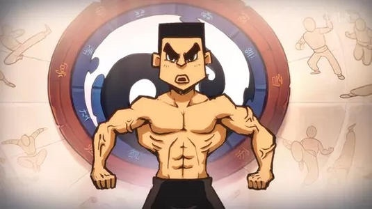
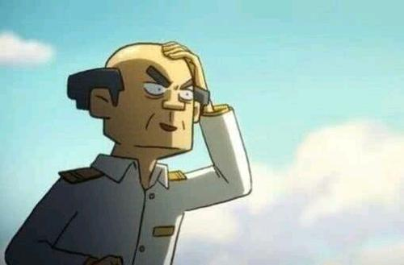

全片以主人公伍六七寻找失去的记忆为故事主线，配合角色与角色之间的爱恨情仇组成的支线贯穿始终。通过讲述主人公在帮助别人和寻找自我的过程中，认识不同的人，与不同角色之间发生的有趣的，最终用爱化解仇恨与偏见的故事，想带给观众欢乐的同时表达对生活的热爱，爱与包容可以化解一切。
| 角色图片 | 角色介绍 |
|---|---|
|  | 伍六七：热血、贱、内心柔软故事男主角，没有记忆，身世是个谜，在大保健发廊做理发师，能够以气御剪，为了寻找自己的过去，走上了刺客之路。 |
|  | 鸡大保：社会、拜金、讲义气聪明的蓝羽鸡，大保健发廊老板兼伍六七的刺客经理人，为了赚大钱怂恿伍六七当刺客，实际身份不明。 |
|  | 小飞鸡：蠢萌鸡大保的养子，是一只擅长飞行的鸡，负责运送伍六七到任务地点。愤怒时会激发他的隐藏能力，进入另外一个形态。 |
| 梅花十三：冷酷、果断，故事女主角，玄武国女刺客，排名37位，擅长使用双刀流和梅花镖，发辫上的短刃可以用于攻击。 | |
|  | 猫小咪：猫星人的首领，技能是金刚猫爪。 |
|  | 汪疯：汪星人的汪疯。 |
|  | 斯坦国王子：沉着冷静，是斯坦国的王子。擅长使用高科技武器。 |
|  | 可乐：异能美少女。 |
|  | 江主任：小鸡岛纯净协会主任。 |
|  | 何大春：小鸡岛的保镖。 |
|  | 陈伯：小鸡岛海防部主任。 |
| 获奖时间 | 奖项名 | 具体奖项 | 结果 |
|---|---|---|---|
| 2018年3月27日 | 法国昂西国际动画电影节主竞赛单元 | 系列动画入围 | |
| 2019年6月10日 | 白玉兰奖 | 最佳动画片 | 提名 |
| 2019年6月10日 | 白玉兰奖 | 最佳动画剧本 | 提名 |
| 2018年12月7日 | 搭乘长征二号丁运载火箭跟随天仪研究院的商业卫星一起发射上太空，成为全球第一支飞入太空的动漫形象。 |